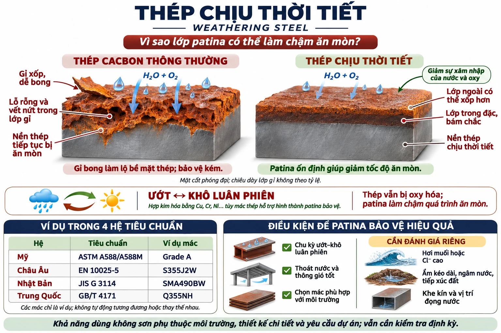
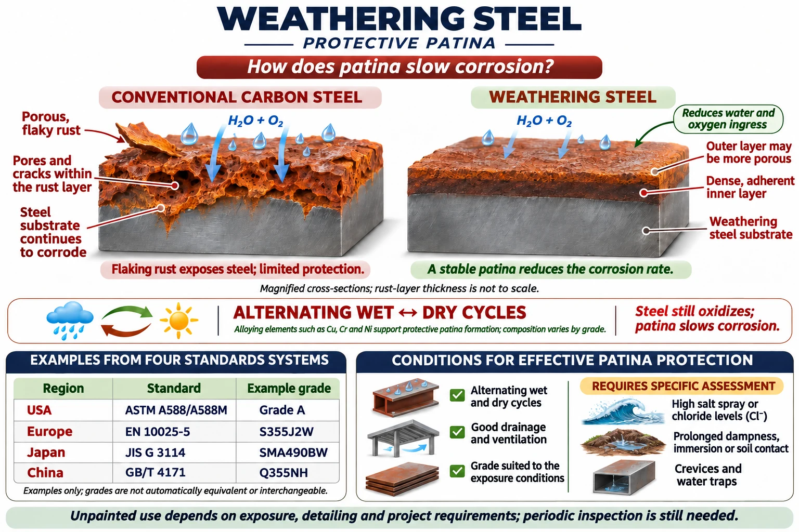

Một dự án kết cấu thép hôm nay hiếm khi chỉ dùng một hệ tiêu chuẩn. Bản vẽ theo châu Âu, thép nhập từ Trung Quốc, bu lông theo Mỹ, chi tiết theo bản vẽ của đối tác Nhật. Mỗi hệ có một “ngôn ngữ” riêng, và hiểu sai một chữ cái có thể nghĩa là nhận nhầm cả một lô vật tư.
Bài viết này gom bốn hệ vào bốn tab. Chọn tab của hệ cần đọc; thêm #en, #astm, #gb hoặc #jis vào cuối đường dẫn để mở thẳng tab đó. Nếu chưa quen với các khái niệm ReH, Charpy, hướng Z hay trạng thái cung cấp, hãy đọc bài nền tảng vật liệu trước.
Châu Âu là hệ tiêu chuẩn mà tên mác “nói” nhiều nhất: đọc kỹ một ký hiệu như S355J2+N+Z35 là biết cường độ, độ dai, trạng thái nhiệt luyện và cả yêu cầu hướng Z. Chính vì thế, đọc sai một ký tự cũng là đặt sai vật liệu.
Giải phẫu một mác thép EN
Ví dụ S355J2+N+Z35: S là thép kết cấu; 355 là giới hạn chảy nhỏ nhất (MPa) ở chiều dày t ≤ 16 mm; J2 là va đập 27 J tại −20 °C; +N là thường hóa; +Z35 là độ thắt tiết diện hướng Z tối thiểu 35% theo EN 10164. Con số 355 chỉ đúng ở dải chiều dày đầu bảng, phải đọc ReH theo đúng chiều dày thực của tấm.
Bộ EN 10025 gồm sáu phần
| Tiêu chuẩn | Phạm vi | Mác điển hình | QC cần nhớ |
|---|---|---|---|
| EN 10025-1 | Điều kiện kỹ thuật chung | — | Quy định chung về ký hiệu, dung sai, chứng chỉ |
| EN 10025-2 | Thép kết cấu không hợp kim | S235JR, S275J0, S355J2, S355K2 | Họ phổ biến nhất: cán nóng, có thể kèm +N |
| EN 10025-3 | Thép hạt mịn thường hóa / cán thường hóa | S355N, S355NL, S460N | N/NL: giao ở trạng thái thường hóa hoặc cán thường hóa, dai ở nhiệt độ thấp |
| EN 10025-4 | Thép hạt mịn cán nhiệt-cơ | S355M, S355ML, S460M | TMCP: CEV thấp, dễ hàn; không tạo hình nóng, khử ứng suất > 580 °C hoặc > 1 h có thể giảm cơ tính |
| EN 10025-5 | Thép chịu thời tiết | S355J2W, S355J0WP | W chịu thời tiết; WP thêm phốt pho |
| EN 10025-6 | Thép tôi và ram cường độ cao | S690Q, S690QL, S960QL | Q/QL/QL1: kiểm soát nhiệt hàn cực nghiêm ngặt |
| EN 10210 / 10219 | Thép hình rỗng nóng / nguội | S355J2H, S355NH | H = thép hình rỗng |
| EN 10149-2 | Thép cường độ cao cán nóng để dập nguội | S355MC, S420MC | MC viết liền, không có dấu “+M” |
Viết ký hiệu EN cho đúng
| Nhóm | Đúng | Sai |
|---|---|---|
| Độ dai | S355J2 | S355+J2 |
| Hạt mịn / tôi ram | S355NL | S355+NL |
| Trạng thái cung cấp | S355J2+N | S355J2N |
| Hướng Z | S355J2+N+Z35 | S355J2+NZ35 |
| Chịu thời tiết | S355J2W | S355J2+W |
| Thép hình rỗng | S355J2H | S355J2+H |
Độ dai và cấp hạt mịn viết liền (S355J2, S355NL); trạng thái cung cấp và tính chất bổ sung có dấu “+” (S355J2+N+Z35). Trong EN 10025 không có ký hiệu “+CR” (chống ăn mòn) hay “+S” (thép lặng), dù hay bị chép nhầm. Riêng “+Z” mang hai nghĩa tùy tiêu chuẩn: +Z15/+Z25/+Z35 trong EN 10025 là cấp hướng Z theo EN 10164, còn +Z275 trong EN 10346 (ví dụ DX51D+Z275) là khối lượng lớp mạ kẽm.
Thép chịu thời tiết: một ý tưởng, bốn cách gọi tên

Đồng, crôm, niken và phốt pho tạo lớp gỉ đặc, bám chắc, bảo vệ thép bên dưới. Lớp patina chỉ hình thành nếu bề mặt được phơi khô và ướt luân phiên. Khi kết cấu dùng trần, lớp hàn phủ ngoài thường cần vật liệu hàn có thành phần chịu thời tiết tương ứng để mối hàn không gỉ nhanh hơn hoặc khác màu kim loại cơ bản; với mối hàn một lớp nhỏ hoặc lớp lót, độ pha loãng từ kim loại nền có thể cho phép dùng vật liệu thường nếu tiêu chuẩn áp dụng và WPS cho phép.
Dùng trần không sơn vẫn cần đánh giá theo môi trường. Điều kiện để patina bảo vệ hiệu quả là chu kỳ ướt–khô luân phiên, thoát nước và thông gió tốt, và chọn mác phù hợp với môi trường. Ngược lại, nơi nhiều ion clorua (gần biển, muối rải đường), ngâm nước hoặc tiếp xúc đất, khe kín và chỗ đọng nước có thể phá hỏng lớp patina; những nơi đó cần đánh giá riêng và kiểm tra định kỳ.
Chứng chỉ theo EN 10204
| 2.1 / 2.2 | 3.1 | 3.2 | |
|---|---|---|---|
| Ai lấy mẫu và thử | 2.1: không thử. 2.2: nhà máy thử nhưng mẫu có thể từ mẻ khác cùng mác | Mẫu lấy từ đúng lô sẽ giao | Như 3.1 |
| Ai xác nhận | Bộ phận sản xuất hoặc kinh doanh tự ký | Đại diện kiểm tra được uỷ quyền, độc lập với sản xuất | Thêm chữ ký đại diện bên mua, bên thứ ba hoặc thanh tra viên |
| Truy xuất được | 2.1 và 2.2: kết quả không gắn với chính lô giao (2.1 không có số liệu thử) | Đến số mẻ nấu và số lô của chính tấm | Như 3.1 |
EN 10204 không nói về chất lượng thép; nó chỉ trả lời việc kết quả thử trên giấy có thật sự thuộc lô thép bạn nhận hay không và ai bảo đảm điều đó. Theo EN 1090-2:2018 (Bảng 1), thép kết cấu ≤ S275 dùng tối thiểu báo cáo thử 2.2, nhưng thép có giới hạn chảy 275 MPa và thử va đập dưới 0 °C phải dùng 3.1; thép > S275 dùng 3.1. Với EXC3 và EXC4, vật liệu phải truy xuất được qua mọi công đoạn từ khi nhận đến khi bàn giao; được phép truy xuất theo lô sản phẩm cùng quy trình sản xuất, trừ khi hợp đồng yêu cầu truy xuất riêng từng sản phẩm. Bản EN 10204:1991 có 2.3, 3.1A, 3.1B, 3.1C; bản 2004 đã bỏ 2.3, gộp 3.1A và 3.1C vào 3.2 và giữ 3.1 thay cho 3.1B. Chứng chỉ ghi “3.1B” dùng ký hiệu của bản cũ: đối chiếu với phiên bản EN 10204 mà hợp đồng viện dẫn; nếu hợp đồng viện dẫn bản 2004, yêu cầu nhà máy xác nhận tương đương 3.1 hoặc phát hành lại. Phần xác nhận phải có tên, chức danh và ngày (chữ ký tay hoặc xác thực điện tử). Không truy được mẻ nấu nghĩa là không nghiệm thu được.
Nội dung một chứng chỉ hợp lệ và dấu hiệu phải nghi ngờ
Đơn vị thương mại được chuyển giao chứng chỉ của nhà máy nhưng không được sửa nội dung. Khi lô hàng bị chia nhỏ phải kèm bảng kê truy xuất nối chứng chỉ gốc với từng phần. Luôn yêu cầu bản gốc của nhà máy cán, không chấp nhận bản do trung gian tự đánh máy lại. Nghi ngờ chứng chỉ không phải là mất lịch sự: đó là nghĩa vụ của QC; cách xác minh đơn giản nhất là yêu cầu nhà máy gửi lại theo số mẻ nấu hoặc lấy mẫu thử độc lập.
- Lưu file gốc do nhà máy phát hành, đặt tên theo số mẻ nấu.
- Chụp ảnh marking trên tấm và ghép cùng chứng chỉ.
- Lập bảng theo dõi: số mẻ nấu, mã cấu kiện, bản vẽ, dự án.
ASTM đi theo hướng ngược lại: tên tiêu chuẩn chỉ là một số thứ tự, còn tính chất nằm ở Grade, Type, Class và các Supplementary Requirement. Nếu bạn quen đọc ký hiệu EN thì phải đổi cách nghĩ khi sang ASTM, và phần A709 cho cầu ở cuối tab này là ví dụ điển hình về việc một tiêu chuẩn đã tích hợp sẵn yêu cầu va đập.
Giải phẫu một số hiệu ASTM
- Grade: cấp cường độ, thường là ReH tính bằng ksi. A572 Gr.50 là 50 ksi = 345 MPa.
- Type: biến thể thành phần hoá học. A572 Type 1 dùng Nb, Type 2 dùng V.
- Class: biến thể về xử lý hoặc mức tính chất trong cùng một Grade.
- Hậu tố M: phiên bản hệ mét, không thay đổi tính chất vật liệu.
- Supplementary Requirement (S): yêu cầu bổ sung phải ghi trong PO. Ví dụ S5 là thử va đập Charpy V-notch, S8 là siêu âm phát hiện phân lớp; thử kéo hướng Z đặt theo ASTM A770. Nếu PO không ghi, nhà máy không có nghĩa vụ thử.
Ví dụ ghi PO đúng: “ASTM A572/A572M Gr.50 Type 1, Supplementary S5 Charpy 27 J tại −20 °C, chứng chỉ EN 10204 3.1”.
Các tiêu chuẩn thép kết cấu ASTM cần biết
| Tiêu chuẩn | Loại thép | ReH nhỏ nhất | Cấp / Grade | Ứng dụng |
|---|---|---|---|---|
| A36 / A36M | Thép carbon kết cấu | 250 MPa (36 ksi) | Không chia cấp | Kết cấu thông dụng, chi tiết phụ |
| A572 / A572M | Hợp kim thấp cường độ cao | 290–450 MPa | Gr 42, 50, 55, 60, 65 | Nhà cao tầng, cầu |
| A992 / A992M | Thép hình cán nóng W-shape | 345–450 MPa | Không chia cấp | Dầm, cột; có khống chế ReH/Rm |
| A588 / A588M | Chịu thời tiết | 345 MPa (t ≤ 100 mm) | Gr A, B, K | Cầu, kết cấu ngoài trời không sơn |
| A709 / A709M | Thép chuyên dùng cho cầu | 250–690 MPa | 36, 50, 50S, 50W, HPS 50W/70W/100W | Cầu; va đập theo vùng cho cấu kiện chịu kéo (T, F) |
| A514 / A514M | Tôi và ram cường độ cao | 690 MPa (t ≤ 65 mm) | Gr A, B, E, F, H, P, Q, S… | Cần cẩu, kết cấu chịu tải rất nặng |
| A283 / A283M | Thép tấm carbon chất lượng kết cấu, cường độ thấp–trung bình | theo cấp | Gr A, B, C, D | Kết cấu thông dụng, bồn bể |
| A285 / A516 | Thép tấm nồi hơi / bình áp lực | theo cấp | Gr C, Gr 70… | Nồi hơi, bình áp lực (không phải thép kết cấu) |
ASTM A709: thép cho cầu
A709/A709M là tiêu chuẩn thép riêng cho cầu (tương đương AASHTO M 270). Khác với A36 hay A572 phải đặt thêm S5 để có va đập, A709 đã tích hợp yêu cầu va đập theo vùng nhiệt độ sử dụng cho cấu kiện chịu kéo: hậu tố T cho cấu kiện chịu kéo không thuộc FCM, hậu tố F cho cấu kiện chịu kéo thuộc FCM (ví dụ 50WT, 50WF); thép không có hậu tố T/F không bắt buộc Charpy. Trong A709 không có khái niệm “level”: mức nghiêm ngặt được thể hiện bằng Grade, Zone và mục đích sử dụng. Danh sách Grade thay đổi theo năm ban hành (các bản gần đây có thêm QST và 50CR), nên luôn ghi rõ năm của A709 đang áp dụng.
- Grade 36 và 50: thép carbon và HSLA cho cầu (tương tự A36 và A572-50).
- Grade 50S: thép hình có khống chế tỷ số ReH/Rm (tương tự A992).
- Grade 50W: chịu thời tiết, dùng trần (như A588).
- HPS 50W, 70W, 100W: High Performance Steel, hàn tốt hơn và dai hơn; ReH nhỏ nhất 345, 485 và 690 MPa.
Zone nhiệt độ, FCM và thử va đập
| Zone | Nhiệt độ sử dụng thấp nhất (LAST) | Nhiệt độ thử Charpy |
|---|---|---|
| Zone 1 | ≥ 0 °F (−18 °C) | 70 °F (21 °C) |
| Zone 2 | −1 … −30 °F | 40 °F (4 °C) |
| Zone 3 | −31 … −60 °F | 10 °F (−12 °C) |
- Zone được xác định theo nhiệt độ sử dụng thấp nhất dự kiến của cầu (LAST): Zone 1 từ 0 °F (−18 °C) trở lên; Zone 2 từ −1 đến −30 °F; Zone 3 từ −31 đến −60 °F. Nhiệt độ thử Charpy thường lần lượt là 70, 40 và 10 °F cho Grade 36, 50, 50W; HPS 70W và 100W có nhiệt độ thử thấp hơn riêng.
- FCM (Fracture Critical Members) là cấu kiện chịu kéo mà hỏng thì cầu sập: yêu cầu năng lượng Charpy cao hơn và thử theo từng tấm (piece, P). Cấu kiện chịu kéo không thuộc FCM (hậu tố T) thử theo mẻ nấu (heat, H); cấu kiện không chịu kéo không bắt buộc Charpy.
- Năng lượng Charpy nhỏ nhất phụ thuộc Grade, chiều dày và FCM hay không FCM: tra bảng CVN trong ấn bản A709/M270 đang áp dụng, không lấy từ bài viết này.
Cách ghi yêu cầu A709 trong PO
Một PO đầy đủ cho A709 nêu: tiêu chuẩn, Grade, loại cấu kiện (FCM hay không), Zone nhiệt độ, tần suất thử Charpy và loại chứng chỉ. Thiếu Zone hoặc FCM/non-FCM là thiếu thông tin để nhà máy thử đúng, và không được suy đoán từ bản vẽ.
Cảnh báo: bảng “hậu tố ASTM” trên mạng phần lớn là sai
| Điều hay bị chép sai | Sự thật | Vì sao nguy hiểm |
|---|---|---|
| “Q” = Quenched (A514 Gr.Q) | Gr.Q chỉ là biến thể thành phần; cả A514 đều là thép tôi và ram | Hiểu sai nhiệt luyện, chọn sai chế độ nung |
| “W” = Weathering (A588 Gr.A-W) | A588 chỉ có Gr A, B, K; không có “A-W”. Ký hiệu W nằm ở A709 (50W) | Đặt bằng mã không tồn tại, nhà máy giao sai |
| “K” = yêu cầu Charpy (A588 Gr.K) | Gr.K là biến thể hoá học, không liên quan va đập | Tưởng có va đập nhưng CTC không có kết quả thử |
| “E” = kiểm tra không phá huỷ | Không có “A572 Gr.50E”; NDT phải đặt bằng Supplementary | Bỏ sót yêu cầu siêu âm cho tấm dày |
| “S” = thép lặng | Trong A709, 50S là cấp thép hình có khống chế ReH/Rm (tương đương A992) | Nhầm yêu cầu luyện kim với yêu cầu kết cấu |
| “CS” = Carbon Structural (A36 Gr.CS) | A36 không chia cấp; CS là “Commercial Steel” của thép tấm mỏng A1011/A653 | Áp nhầm tiêu chuẩn tấm mỏng cho kết cấu |
| “H” = thép chất lượng cao | Trong ASTM, H chỉ độ thấm tôi (hardenability), ví dụ 4140H | Kỳ vọng sai mức kiểm soát chất lượng |
Quy tắc an toàn với ASTM: chỉ tin vào bản thân tiêu chuẩn và các Table trong đó. Nếu một ký hiệu không tra được trong tiêu chuẩn gốc, nó không tồn tại.
Hệ GB được viết theo logic gần giống EN, nên người đã quen EN đọc khá dễ. Điểm cần cẩn thận là phiên bản tiêu chuẩn: GB/T 1591 đổi từ Q345 sang Q355 và bỏ cấp A trong bản 2018, và nhiều chứng chỉ trên thị trường bị trung gian lập lại.
Giải phẫu một mác thép GB
Q là chữ cái đầu của “giới hạn chảy” (屈, qū); 355 là ReH nhỏ nhất tính bằng MPa; N là trạng thái thường hóa hoặc cán thường hóa; D là cấp chất lượng thử va đập ở −20 °C (Q355ND: 40 J mẫu dọc, 20 J mẫu ngang theo GB/T 1591-2018 Bảng 11); Z25 là yêu cầu hướng Z theo GB/T 5313. Hệ GB có cấu trúc gần giống EN nhất.
Các tiêu chuẩn GB/T thường gặp trong hồ sơ vật tư
| Tiêu chuẩn | Phạm vi | Mác điển hình | Ghi chú |
|---|---|---|---|
| GB/T 700-2006 | Thép carbon kết cấu | Q195, Q215, Q235 (A/B/C/D), Q275 | Ký hiệu khử oxy F / Z / TZ ở cuối mác (bản 2006 đã bỏ b; Z, TZ được lược bỏ) |
| GB/T 1591-2018 | Hợp kim thấp cường độ cao | Q355, Q390, Q420, Q460, Q500–Q690 | Bản 2018 đổi Q345 thành Q355 và bỏ cấp A |
| GB/T 4171-2008 | Thép chịu thời tiết | Q235NH, Q355NH, Q355GNH | NH chịu thời tiết; GNH chịu thời tiết cao |
| GB/T 5313 | Thép tấm có tính chất hướng Z | Z15, Z25, Z35 | Tương đương EN 10164 |
| GB/T 713 / 3531 | Thép tấm bình áp lực / nhiệt độ thấp | Q245R, Q345R, 16MnDR | R là 容器 (bình chứa), không phải “hot-rolled” |
| GB/T 6728 / 8162 | Thép hình rỗng nguội / ống kết cấu | Q355B, Q355C | Không có hậu tố “H” như EN |
| GB/T 16270 | Thép tấm tôi và ram cường độ cao | Q690D, Q960E | Tên mác không có hậu tố QT; lưu ý GB/T 1591-2018 cũng có Q690MC/MD/ME ở trạng thái cán nhiệt-cơ |
| GB/T 699 | Thép carbon chất lượng cao | 20, 35, 45 | Cho chi tiết máy, không dùng làm kết cấu hàn |
Không tồn tại các mác “Q355NHW”, “Q355H”, “Q355G”, “Q235R”. Thép bình áp lực bắt đầu từ Q245R.
Cấp chất lượng, trạng thái cung cấp và khử oxy
Với GB/T 700 (Q235): A không thử va đập; B +20 °C, C 0 °C, D −20 °C, đều 27 J. GB/T 1591-2018 không còn cấp A; B +20 °C, C 0 °C, D −20 °C, E −40 °C, F −60 °C, nhưng năng lượng tùy mác và trạng thái (Bảng 11, mẫu dọc): Q355B/C/D cán nóng 34 J; Q355ND/MD 40 J; Q355NE/ME 31 J; Q355NF/MF 27 J. Trạng thái cung cấp theo GB/T 1591-2018 (điều 4.1): AR (thường bỏ trống), N thường hóa hoặc cán thường hóa, M cán nhiệt-cơ; tiêu chuẩn này không có trạng thái tôi và ram. Z và TZ trong GB/T 700 là ký hiệu khử oxy (thép lặng, lặng đặc biệt) và được phép lược bỏ, không phải hướng Z; hướng Z của tấm dày là Z15/Z25/Z35 theo GB/T 5313.
Sáu điểm phải kiểm khi nhận thép theo tiêu chuẩn GB
- Phiên bản tiêu chuẩn: GB/T 1591 bản 2008 dùng Q345, bản 2018 dùng Q355; CTC phải ghi năm ban hành.
- Q345 không chỉ khác Q355 về tên: bản 2008 quy định giới hạn chảy dưới, bản 2018 quy định giới hạn chảy trên và tăng chỉ tiêu 10–15 MPa (Lời nói đầu GB/T 1591-2018); bản vẽ, PO và CTC phải thống nhất một tên và một phiên bản.
- Cấp chất lượng: Q355B thử ở +20 °C, không có va đập −20 °C. Phụ lục A (tham khảo) của GB/T 1591-2018 đối chiếu Q355D với S355J2, nhưng thay thế vật liệu vẫn phải được phê duyệt, không mặc nhiên tương đương.
- Dòng hướng Z: phải có kết quả RoA cụ thể, không chỉ ghi chữ Z.
- Trạng thái cung cấp: AR thường bị bỏ trống trong tên mác; đọc mục giao hàng trên CTC để biết AR, N hay M.
- Xác minh CTC: nhiều CTC được lập lại bởi đơn vị thương mại; yêu cầu bản gốc của nhà máy cán và đối chiếu số mẻ nấu trên tấm.
JIS là hệ dễ gây nhầm nhất vì con số trong tên là độ bền kéo chứ không phải giới hạn chảy. Một kỹ sư quen EN nhìn thấy SM490 sẽ dễ tưởng là thép 490 MPa theo kiểu S490, trong khi giới hạn chảy thực chỉ 325 đến 365 MPa.
Giải phẫu một mác thép JIS
S là Steel; M là họ thép kết cấu hàn (JIS G3106); 490 là độ bền kéo nhỏ nhất tính bằng MPa, không phải giới hạn chảy (chỉ 325 đến 365 MPa); Y nâng giới hạn chảy lên 365 MPa; B là cấp va đập (A không thử, B 0 °C 27 J, C 0 °C 47 J). Đây là hệ dễ nhầm nhất vì con số là độ bền kéo.
Năm họ thép JIS thường gặp trong bản vẽ Nhật
| Ký hiệu | Tên đầy đủ | Tiêu chuẩn | Mác điển hình | QC cần nhớ |
|---|---|---|---|---|
| SS | Structural Steel | JIS G3101 | SS330, SS400, SS490, SS540 | Chỉ khống chế P và S; không kiểm soát C, Si, Mn nên tiêu chuẩn không bảo đảm thành phần cho kết cấu hàn (không có nghĩa là không hàn được) |
| SM | Steel for Welded Structure | JIS G3106 | SM400A/B/C, SM490A/B/C, SM490YA/YB, SM520B/C, SM570 | Khống chế đầy đủ thành phần và va đập: dùng cho kết cấu hàn |
| SMA | Atmospheric Corrosion Resisting | JIS G3114 | SMA400AW/BW/CW, SMA490AP/BP/CP, SMA570W/P | W dùng trần (tạo patina); P dùng có sơn phủ, không phải phốt pho cao |
| STK | Steel Tube for Structure | JIS G3444 | STK400, STK490, STK500, STK540 | Ống tròn kết cấu; hậu tố chỉ phương pháp chế tạo |
| STKR | Steel Rectangular Tube | JIS G3466 | STKR400, STKR490 | Ống vuông và chữ nhật kết cấu |
Cấp va đập thật của JIS G3106
| Mác thép | ReH min (t ≤ 16 mm) | Rm | Va đập | So sánh gần đúng với EN |
|---|---|---|---|---|
| SM400A | 245 MPa | 400–510 MPa | Không yêu cầu | ≈ S235, không có độ dai đảm bảo |
| SM400B | 245 MPa | 400–510 MPa | 0 °C · 27 J | ≈ S235J0 |
| SM400C | 245 MPa | 400–510 MPa | 0 °C · 47 J | ≈ S235J0 mức cao |
| SM490A | 325 MPa | 490–610 MPa | Không yêu cầu | ≈ S355 không đảm bảo độ dai |
| SM490B | 325 MPa | 490–610 MPa | 0 °C · 27 J | Tham khảo S355J0 (ReH thấp hơn) |
| SM490C | 325 MPa | 490–610 MPa | 0 °C · 47 J | ≈ S355J0 mức cao |
| SM490YA / YB | 365 MPa | 490–610 MPa | YA không · YB 0 °C 27 J | Y = nâng giới hạn chảy |
| SM520B / C | 365 MPa | 520–640 MPa | B 0 °C 27 J · C 0 °C 47 J | ≈ S355 cường độ cao |
| SM570 | 460 MPa | 570–720 MPa | −5 °C · 47 J | ≈ S460 |
Bảng va đập của JIS G3106 không có mức thử mặc định ở −20 °C. Nếu bản vẽ yêu cầu độ dai −20 °C mà kho giao SM490C thì không đạt, dù SM490C nghe có vẻ “cấp cao nhất”. Cột so sánh với EN chỉ để tra cứu, ví dụ SM490B có ReH 325 MPa (t ≤ 16 mm), thấp hơn S355J0 (355 MPa); thay thế vật liệu phải có phê duyệt bằng văn bản.
Bẫy JIS: SS400 và SM400 không thay thế cho nhau
| SS400 (JIS G3101) | SM400B (JIS G3106) | |
|---|---|---|
| Mục đích | Kết cấu chung | Kết cấu hàn chịu lực |
| Giới hạn C | Không quy định | ≤ 0,20 % (t ≤ 50) · ≤ 0,22 % (> 50–200 mm) |
| Si · Mn | Không quy định | ≤ 0,35 % · 0,60–1,40 % |
| P · S | ≤ 0,050 % | ≤ 0,035 % |
| Va đập | Không | 0 °C · 27 J |
| Kiểm soát thành phần cho kết cấu hàn | Không | Có |
| ReH (t ≤ 16 mm) | 245 MPa | 245 MPa |
Cùng ReH 245 MPa nhưng SS400 không được kiểm soát thành phần cho kết cấu hàn (giá trị SM400B theo JIS G3106:2004, Bảng 2; Mn tối đa có thể khác ở bản mới hơn). Với mối hàn ngấu hoàn toàn hoặc kết cấu chịu tải động, nên dùng SM, trừ khi tiêu chuẩn thiết kế và quy trình hàn được phê duyệt cho phép khác. Nhận SS400 thay cho SM400 là không phù hợp: phát NCR. Trong JIS G3114, chữ P chỉ loại dùng có sơn phủ, còn W là loại dùng trần; các hậu tố “-H, -T, -N, -M, -K, -Z” trong G3101 và G3106 không tồn tại.
Bốn tab trên có một điểm chung: không hệ nào đọc đúng nếu chỉ nhìn vào tên mác. Luôn đọc cả chứng chỉ, năm ban hành tiêu chuẩn và dải chiều dày, và coi mọi bảng “tương đương” chỉ là gợi ý tra cứu cho đến khi có phê duyệt thay thế bằng văn bản.
A steel-structure project today rarely uses a single standard system. European drawings, steel imported from China, American bolts, details from a Japanese partner’s drawings. Each system has its own “language”, and misunderstanding one letter can mean accepting a wrong lot of material.
This article gathers the four systems into four tabs. Choose the tab of the system you need; add #en, #astm, #gb or #jis to the end of the link to open that tab directly. If concepts such as ReH, Charpy, Z-direction or delivery condition are new to you, read the material fundamentals article first.
Europe is the system whose grade names “say” the most: reading a designation such as S355J2+N+Z35 carefully tells you strength, toughness, heat-treatment state and even the Z requirement. For that reason, misreading a single character is ordering the wrong material.
Anatomy of an EN steel grade
Example S355J2+N+Z35: S is structural steel; 355 is the minimum yield strength (MPa) at thickness t ≤ 16 mm; J2 is 27 J impact at −20 °C; +N is normalised; +Z35 is a minimum through-thickness reduction of area of 35% per EN 10164. The number 355 holds only for the first thickness range; read ReH for the actual plate thickness.
EN 10025 has six parts
| Standard | Scope | Typical grades | QC point |
|---|---|---|---|
| EN 10025-1 | General technical conditions | — | General rules on designation, tolerances, certificates |
| EN 10025-2 | Non-alloy structural steels | S235JR, S275J0, S355J2, S355K2 | The most common family: hot rolled, possibly +N |
| EN 10025-3 | Normalised fine-grain steels | S355N, S355NL, S460N | N/NL: delivered normalised or normalised rolled, tough at low temperature |
| EN 10025-4 | Thermo-mechanical fine-grain steels | S355M, S355ML, S460M | TMCP: low CEV, weldable; no hot forming, stress relief > 580 °C or > 1 h may degrade properties |
| EN 10025-5 | Weathering steels | S355J2W, S355J0WP | W weathering; WP phosphorus-bearing |
| EN 10025-6 | High-strength quenched and tempered | S690Q, S690QL, S960QL | Q/QL/QL1: extremely strict control of welding heat |
| EN 10210 / 10219 | Hot / cold hollow sections | S355J2H, S355NH | H = hollow section |
| EN 10149-2 | High-strength hot-rolled for cold forming | S355MC, S420MC | MC is written together, not “+M” |
Writing EN designations correctly
| Group | Right | Wrong |
|---|---|---|
| Toughness | S355J2 | S355+J2 |
| Fine grain / Q&T | S355NL | S355+NL |
| Delivery condition | S355J2+N | S355J2N |
| Z-direction | S355J2+N+Z35 | S355J2+NZ35 |
| Weathering | S355J2W | S355J2+W |
| Hollow section | S355J2H | S355J2+H |
Toughness and fine-grain classes are written together (S355J2, S355NL); delivery condition and additional properties take a “+” (S355J2+N+Z35). EN 10025 has no “+CR” (corrosion resistant) or “+S” (killed steel) symbol, although they are often copied wrongly. “+Z” has two meanings depending on the standard: +Z15/+Z25/+Z35 in EN 10025 is the through-thickness grade to EN 10164, while +Z275 in EN 10346 (for example DX51D+Z275) is the zinc coating mass.
Weathering steel: one idea, four names

Copper, chromium, nickel and phosphorus build a dense, adherent rust layer that protects the steel beneath. The patina forms only if the surface is exposed to alternating wet and dry conditions. For bare structures, the exposed weld runs usually need weathering-type consumables so the weld does not corrode faster or differ in colour from the base metal; for small single-run welds or root runs, dilution from the parent metal may allow ordinary consumables where the applicable standard and the WPS permit.
Unpainted use still needs assessment for the environment. The conditions for effective patina protection are alternating wet–dry cycles, good drainage and ventilation, and a grade suited to the exposure. By contrast, high chloride levels (near the sea, de-icing salt), immersion or soil contact, crevices and water traps can destroy the patina; those places need separate assessment and periodic inspection.
Certificates to EN 10204
| 2.1 / 2.2 | 3.1 | 3.2 | |
|---|---|---|---|
| Who samples and tests | 2.1: no test. 2.2: mill tests but specimens may come from another heat of the same grade | Specimens from the very lot to be delivered | As 3.1 |
| Who validates | Production or sales department signs itself | Authorised inspection representative, independent of production | Plus signature of purchaser’s representative, third party or inspector |
| Traceability | 2.1: none. 2.2: grade only | Down to heat and lot number of the plate itself | As 3.1 |
EN 10204 says nothing about steel quality; it only answers whether the test results on paper really belong to the steel lot you receive, and who guarantees that. Under EN 1090-2:2018 (Table 1), structural steel ≤ S275 needs at least a 2.2 test report, but steel with a 275 MPa yield and impact testing below 0 °C needs 3.1; steel > S275 needs 3.1. For EXC3 and EXC4, products must be traceable at all stages from receipt to hand-over; traceability may be based on batches allocated to a common production process, unless traceability of each individual product is specified. The 1991 edition had 2.3, 3.1A, 3.1B, 3.1C; the 2004 edition dropped 2.3, merged 3.1A and 3.1C into 3.2 and kept 3.1 in place of 3.1B. A certificate marked “3.1B” uses the old edition's notation: check it against the EN 10204 edition cited in the contract; if the contract cites the 2004 edition, ask the mill to confirm equivalence to 3.1 or to reissue it. The validation must carry name, title and date (handwritten or electronic). If the heat number cannot be traced, the material cannot be accepted.
Content of a valid certificate and red flags
A trader may pass on the mill certificate but must not alter its content. When a lot is split, a traceability list must link the original certificate to each part. Always ask for the original from the rolling mill, never accept a version retyped by an intermediary. Doubting a certificate is not discourteous: it is a QC duty; the simplest verification is to ask the mill to resend it by heat number or to take an independent test sample.
- Keep the original file issued by the mill, named by heat number.
- Photograph the marking on the plate and file it with the certificate.
- Keep a tracking table: heat number, member mark, drawing, project.
ASTM goes the opposite way: the standard’s name is only a serial number, and the properties sit in Grade, Type, Class and the Supplementary Requirements. If you are used to reading EN designations you must change your thinking for ASTM, and the A709 bridge section at the end of this tab is a good example of a standard that already integrates the impact requirement.
Anatomy of an ASTM designation
- Grade: strength level, usually ReH in ksi. A572 Gr.50 is 50 ksi = 345 MPa.
- Type: chemistry variant. A572 Type 1 uses Nb, Type 2 uses V.
- Class: a variant of treatment or property level within one Grade.
- Suffix M: metric edition, does not change material properties.
- Supplementary Requirement (S): additional requirements that must be written in the PO. For example S5 is Charpy V-notch impact testing, S8 is ultrasonic examination for lamination; Z-direction tension testing is ordered to ASTM A770. If the PO is silent the mill has no obligation to test.
A correct PO wording: “ASTM A572/A572M Gr.50 Type 1, Supplementary S5 Charpy 27 J at −20 °C, EN 10204 3.1 certificate”.
ASTM structural steel standards to know
| Standard | Steel type | Min. ReH | Grade | Typical use |
|---|---|---|---|---|
| A36 / A36M | Structural carbon steel | 250 MPa (36 ksi) | No grades | General structures, secondary parts |
| A572 / A572M | High-strength low-alloy | 290–450 MPa | Gr 42, 50, 55, 60, 65 | High-rise buildings, bridges |
| A992 / A992M | Hot-rolled W-shapes | 345–450 MPa | No grades | Beams, columns; ReH/Rm controlled |
| A588 / A588M | Weathering | 345 MPa (t ≤ 100 mm) | Gr A, B, K | Bridges, unpainted outdoor structures |
| A709 / A709M | Dedicated bridge steel | 250–690 MPa | 36, 50, 50S, 50W, HPS 50W/70W/100W | Bridges; zone-based impact for tension members (T, F) |
| A514 / A514M | High-strength quenched and tempered | 690 MPa (t ≤ 65 mm) | Gr A, B, E, F, H, P, Q, S… | Cranes, very heavily loaded structures |
| A283 / A283M | Structural-quality carbon steel plate, low–intermediate strength | by grade | Gr A, B, C, D | General structures, tanks |
| A285 / A516 | Boiler / pressure-vessel plate | by grade | Gr C, Gr 70… | Boilers, pressure vessels (not structural steel) |
ASTM A709: steel for bridges
A709/A709M is the dedicated bridge steel standard (equivalent to AASHTO M 270). Unlike A36 or A572, where S5 must be added to get impact testing, A709 already integrates impact requirements by service-temperature zone for tension members: suffix T for non-fracture-critical tension members, suffix F for fracture-critical tension members (e.g. 50WT, 50WF); steel without a T/F suffix has no mandatory Charpy requirement. A709 has no “level” concept: severity is expressed through Grade, Zone and intended use. The list of Grades changes with the edition (recent editions add QST and 50CR), so always state the year of the A709 in use.
- Grades 36 and 50: carbon and HSLA bridge steel (similar to A36 and A572-50).
- Grade 50S: rolled shapes with controlled ReH/Rm ratio (similar to A992).
- Grade 50W: weathering steel used unpainted (like A588).
- HPS 50W, 70W, 100W: High Performance Steel, better weldability and toughness; minimum ReH 345, 485 and 690 MPa.
Temperature zones, FCM and impact testing
| Zone | Lowest anticipated service temp. (LAST) | Charpy test temp. |
|---|---|---|
| Zone 1 | ≥ 0 °F (−18 °C) | 70 °F (21 °C) |
| Zone 2 | −1 … −30 °F | 40 °F (4 °C) |
| Zone 3 | −31 … −60 °F | 10 °F (−12 °C) |
- Zone is set by the lowest anticipated service temperature (LAST) of the bridge: Zone 1 at 0 °F (−18 °C) and above; Zone 2 from −1 to −30 °F; Zone 3 from −31 to −60 °F. Charpy test temperatures are typically 70, 40 and 10 °F for Grades 36, 50, 50W; HPS 70W and 100W have their own lower test temperatures.
- FCM (Fracture Critical Members) are tension members whose failure would collapse the bridge: higher Charpy energy and testing per plate (piece, P). Non-fracture-critical tension members (suffix T) are tested per heat (H); non-tension members have no mandatory Charpy.
- The minimum Charpy energy depends on Grade, thickness and FCM or non-FCM: read it from the CVN table of the A709/M270 edition in force, not from this article.
How to write an A709 requirement in the PO
A complete PO for A709 states: the standard, Grade, member type (FCM or not), temperature Zone, Charpy testing frequency and certificate type. A missing Zone or FCM/non-FCM leaves the mill without what it needs to test correctly, and must not be guessed from the drawing.
Warning: most “ASTM suffix” tables on the internet are wrong
| Commonly mis-copied | The truth | Why it is dangerous |
|---|---|---|
| “Q” = Quenched (A514 Gr.Q) | Gr.Q is just a chemistry variant; all of A514 is quenched and tempered | Misreading heat treatment, choosing the wrong heating regime |
| “W” = Weathering (A588 Gr.A-W) | A588 has only Gr A, B, K; there is no “A-W”. The W suffix is in A709 (50W) | Ordering a non-existent code, the mill delivers wrongly |
| “K” = Charpy requirement (A588 Gr.K) | Gr.K is a chemistry variant, unrelated to impact | Assuming impact testing when the CTC has no result |
| “E” = non-destructive testing | There is no “A572 Gr.50E”; NDT must be ordered with a Supplementary | Missing the UT requirement for thick plate |
| “S” = killed steel | In A709, 50S is the shapes grade with controlled ReH/Rm (equivalent to A992) | Confusing a metallurgical requirement with a structural one |
| “CS” = Carbon Structural (A36 Gr.CS) | A36 has no grades; CS is “Commercial Steel” of thin sheet A1011/A653 | Applying a thin-sheet standard to structures |
| “H” = high-quality steel | In ASTM, H denotes hardenability, for example 4140H | Wrong expectation of quality control level |
Safety rule for ASTM: trust only the standard itself and its Tables. If a symbol cannot be found in the original standard, it does not exist.
The GB system follows logic close to EN, so those used to EN read it easily. What needs care is the standard edition: GB/T 1591 changed from Q345 to Q355 and dropped class A in the 2018 edition, and many certificates on the market are reissued by intermediaries.
Anatomy of a GB steel grade
Q is the first letter of “yield” (屈, qū); 355 is the minimum ReH in MPa; N is the normalised or normalised rolled condition; D is the quality class impact-tested at −20 °C (Q355ND: 40 J longitudinal, 20 J transverse per GB/T 1591-2018 Table 11); Z25 is the through-thickness requirement per GB/T 5313. The GB system is the closest in structure to EN.
GB/T standards commonly seen in material records
| Standard | Scope | Typical grades | Note |
|---|---|---|---|
| GB/T 700-2006 | Structural carbon steel | Q195, Q215, Q235 (A/B/C/D), Q275 | Deoxidation symbols F / Z / TZ at the end (b dropped in 2006; Z, TZ may be omitted) |
| GB/T 1591-2018 | High-strength low-alloy | Q355, Q390, Q420, Q460, Q500–Q690 | The 2018 edition renamed Q345 to Q355 and dropped class A |
| GB/T 4171-2008 | Weathering steel | Q235NH, Q355NH, Q355GNH | NH weathering; GNH high weathering |
| GB/T 5313 | Plate with Z-direction properties | Z15, Z25, Z35 | Equivalent to EN 10164 |
| GB/T 713 / 3531 | Pressure-vessel / low-temperature plate | Q245R, Q345R, 16MnDR | R is 容器 (vessel), not “hot-rolled” |
| GB/T 6728 / 8162 | Cold-formed hollow sections / structural tube | Q355B, Q355C | No “H” suffix as in EN |
| GB/T 16270 | High-strength quenched and tempered plate | Q690D, Q960E | Grade names carry no QT suffix; note GB/T 1591-2018 also has Q690MC/MD/ME in the thermo-mechanical condition |
| GB/T 699 | High-quality carbon steel | 20, 35, 45 | For machine parts, not for welded structures |
The grades “Q355NHW”, “Q355H”, “Q355G” and “Q235R” do not exist. Pressure-vessel steel starts at Q245R.
Quality classes, delivery condition and deoxidation
For GB/T 700 (Q235): A has no impact test; B +20 °C, C 0 °C, D −20 °C, all at 27 J. GB/T 1591-2018 no longer has class A; B +20 °C, C 0 °C, D −20 °C, E −40 °C, F −60 °C, but the energy depends on grade and condition (Table 11, longitudinal): hot-rolled Q355B/C/D 34 J; Q355ND/MD 40 J; Q355NE/ME 31 J; Q355NF/MF 27 J. Delivery conditions in GB/T 1591-2018 (clause 4.1): AR (usually left blank), N normalised or normalised rolled, M thermo-mechanical; this standard has no quenched and tempered condition. Z and TZ in GB/T 700 are deoxidation symbols (killed, fully killed) and may be omitted; they are not the Z direction; the through-thickness grade of thick plate is Z15/Z25/Z35 per GB/T 5313.
Six checks when receiving steel to GB standards
- Standard edition: GB/T 1591 of 2008 uses Q345, the 2018 edition uses Q355; the CTC must state the year.
- Q345 differs from Q355 by more than the name: the 2008 edition specified the lower yield strength, the 2018 edition specifies the upper yield strength with values 10–15 MPa higher (GB/T 1591-2018 foreword); drawing, PO and CTC must agree on one name and one edition.
- Quality class: Q355B is tested at +20 °C and has no −20 °C impact. Informative Annex A of GB/T 1591-2018 compares Q355D with S355J2, but substitution still needs approval and is not automatically equivalent.
- Z line: must show actual RoA results, not just the letter Z.
- Delivery condition: AR is often left blank in the name; read the delivery entry on the CTC to know AR, N or M.
- Verify the CTC: many CTCs are reissued by traders; ask for the original from the rolling mill and match the heat number on the plate.
JIS is the system most likely to cause mix-ups because the number in the name is the tensile strength, not the yield. An engineer used to EN who sees SM490 may take it for a 490 MPa steel in the style of S490, while the real yield is only 325 to 365 MPa.
Anatomy of a JIS steel grade
S is Steel; M is the welded-structure family (JIS G3106); 490 is the minimum tensile strength in MPa, not the yield (only 325 to 365 MPa); Y raises the yield to 365 MPa; B is the impact class (A none, B 0 °C 27 J, C 0 °C 47 J). This is the easiest system to misread because the number is tensile strength.
Five JIS families common on Japanese drawings
| Symbol | Full name | Standard | Typical grades | QC point |
|---|---|---|---|---|
| SS | Structural Steel | JIS G3101 | SS330, SS400, SS490, SS540 | Controls only P and S; no limit on C, Si, Mn, so the standard does not secure the chemistry for welded structures (this does not mean it cannot be welded) |
| SM | Steel for Welded Structure | JIS G3106 | SM400A/B/C, SM490A/B/C, SM490YA/YB, SM520B/C, SM570 | Full control of composition and impact: for welded structures |
| SMA | Atmospheric Corrosion Resisting | JIS G3114 | SMA400AW/BW/CW, SMA490AP/BP/CP, SMA570W/P | W used bare (forms patina); P used painted, not high phosphorus |
| STK | Steel Tube for Structure | JIS G3444 | STK400, STK490, STK500, STK540 | Structural round tube; suffix indicates manufacturing method |
| STKR | Steel Rectangular Tube | JIS G3466 | STKR400, STKR490 | Structural square and rectangular tube |
The real impact classes of JIS G3106
| Grade | Min. ReH (t ≤ 16 mm) | Rm | Impact | Rough EN comparison |
|---|---|---|---|---|
| SM400A | 245 MPa | 400–510 MPa | None | ≈ S235, no guaranteed toughness |
| SM400B | 245 MPa | 400–510 MPa | 0 °C · 27 J | ≈ S235J0 |
| SM400C | 245 MPa | 400–510 MPa | 0 °C · 47 J | ≈ S235J0 higher level |
| SM490A | 325 MPa | 490–610 MPa | None | ≈ S355 without guaranteed toughness |
| SM490B | 325 MPa | 490–610 MPa | 0 °C · 27 J | Ref. S355J0 (lower ReH) |
| SM490C | 325 MPa | 490–610 MPa | 0 °C · 47 J | ≈ S355J0 higher level |
| SM490YA / YB | 365 MPa | 490–610 MPa | YA none · YB 0 °C 27 J | Y = raised yield |
| SM520B / C | 365 MPa | 520–640 MPa | B 0 °C 27 J · C 0 °C 47 J | ≈ high-strength S355 |
| SM570 | 460 MPa | 570–720 MPa | −5 °C · 47 J | ≈ S460 |
The JIS G3106 impact table has no default test level at −20 °C. If the drawing requires −20 °C toughness and the stock is SM490C it is not acceptable, even though SM490C sounds like the “highest class”. The EN comparison column is for look-up only, e.g. SM490B has ReH 325 MPa (t ≤ 16 mm), lower than S355J0 (355 MPa); material substitution needs written approval.
JIS trap: SS400 and SM400 are not interchangeable
| SS400 (JIS G3101) | SM400B (JIS G3106) | |
|---|---|---|
| Purpose | General structural | Load-bearing welded |
| C limit | Not specified | ≤ 0.20 % (t ≤ 50) · ≤ 0.22 % (> 50–200 mm) |
| Si · Mn | Not specified | ≤ 0,35 % · 0,60–1,40 % |
| P · S | ≤ 0,050 % | ≤ 0,035 % |
| Impact | None | 0 °C · 27 J |
| Chemistry controlled for welded structures | No | Yes |
| ReH (t ≤ 16 mm) | 245 MPa | 245 MPa |
With the same ReH of 245 MPa, SS400 has no chemistry control for welded structures (SM400B values per JIS G3106:2004, Table 2; the Mn maximum may differ in later editions). For full-penetration welds or dynamically loaded structures SM should be used, unless the design standard and an approved welding procedure allow otherwise. Receiving SS400 in place of SM400 is non-conforming: raise an NCR. In JIS G3114 the letter P indicates painted use and W indicates bare use; the suffixes “-H, -T, -N, -M, -K, -Z” in G3101 and G3106 do not exist.
The four tabs have one thing in common: no system is read correctly by looking at the grade name alone. Always read the certificate too, the year of the standard and the thickness range, and treat every “equivalent” table as only a look-up hint until there is written approval for substitution.